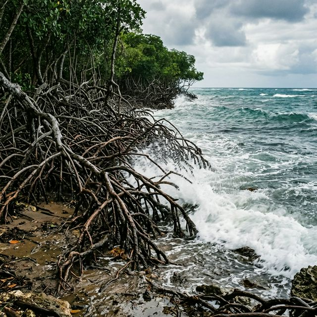
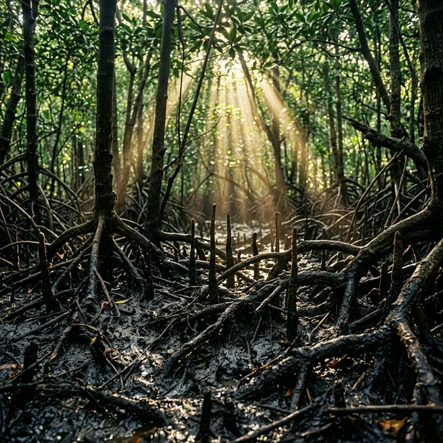
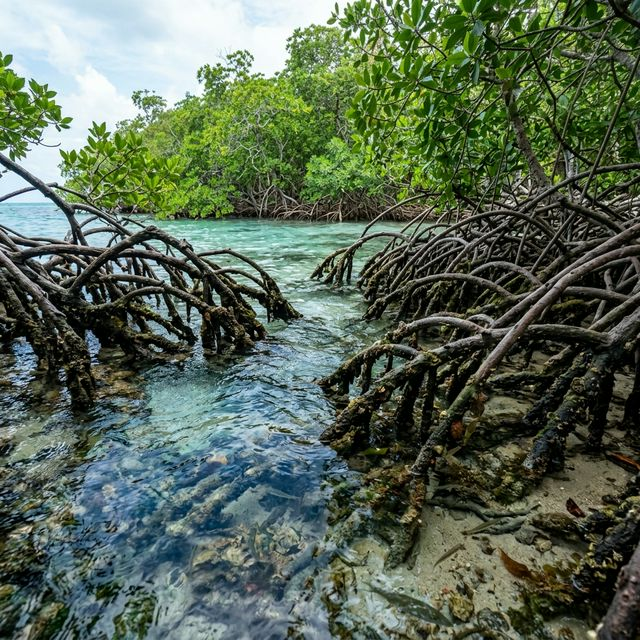
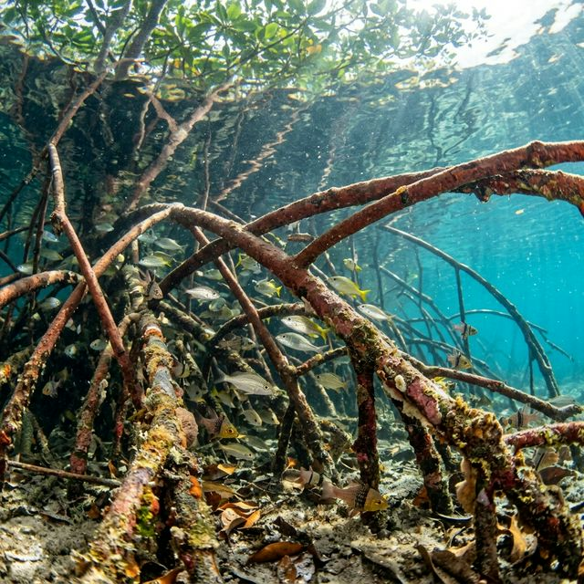

Memuat...
Sabar Kaka...
Saltwater
Coastal
Prop Roots
Scientific Description
Sedang menghubungkan ke ensiklopedia...
eco Environmental Benefits

shield
Pelindung Pantai
Meredam gelombang dan mencegah erosi abrasi pantai.

co2
Penyerap Karbon
Menyimpan karbon biru jauh melebihi hutan tropis darat.

water_drop
Saringan Air Alami
Akarnya menyaring sedimen dan menjernihkan air sungai.

set_meal
Habitat Pembibitan
Rumah aman bagi larva ikan dan berbagai biota laut.